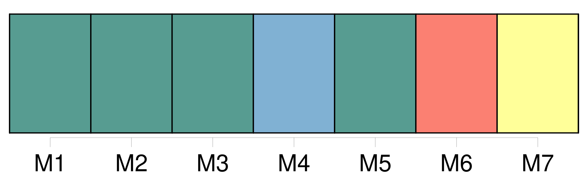
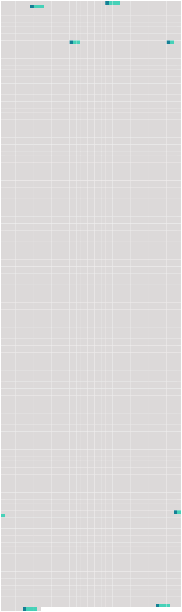

Longueur nb maillons : 7 mentions |
  |
f ) On entend par « immersion » : [7 phrases] n ) On entend par « [navires ou aéronefs] » : les embarcations de mer ou les appareils aériens de quelque type que ce soit, leurs parties et leurs autres équipements.
[Cette expression] vise les appareils sur coussin d'air, les appareils flottants automoteurs ou non, ainsi que d'autres structures artificielles se trouvant dans la zone maritime, de même que leur équipement, mais ne vise pas les installations et les pipelines offshore. [217 phrases]
La liste visée au paragraphe 1 est la suivante : [30 phrases]
La présente annexe ne s'applique pas : |
 |
La ressource peut être téléchargée sur la page Ortolang
Si vous avez des questions ou vous voyez des erreurs, merci d'envoyer un mail à silvia.federzoni89@gmail.com
Site développé par S. Federzoni (contact)